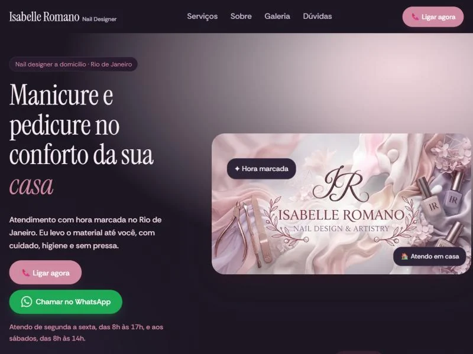
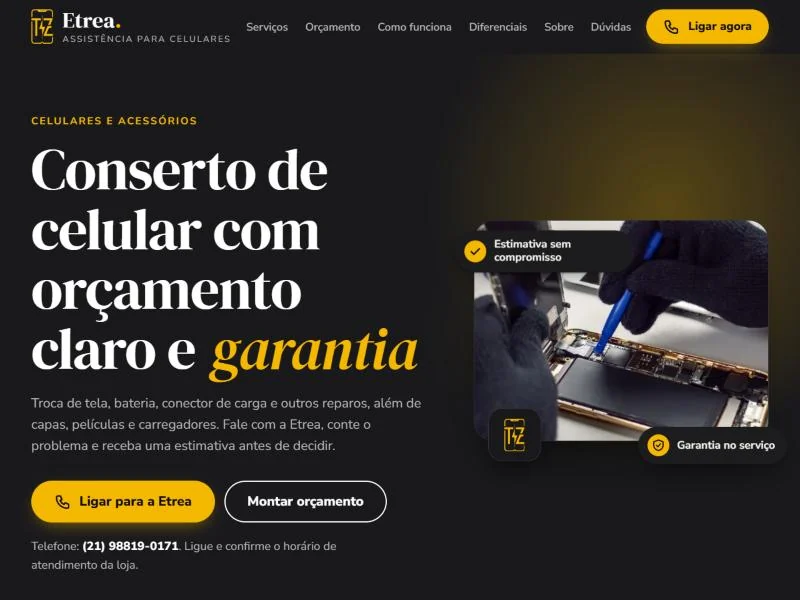
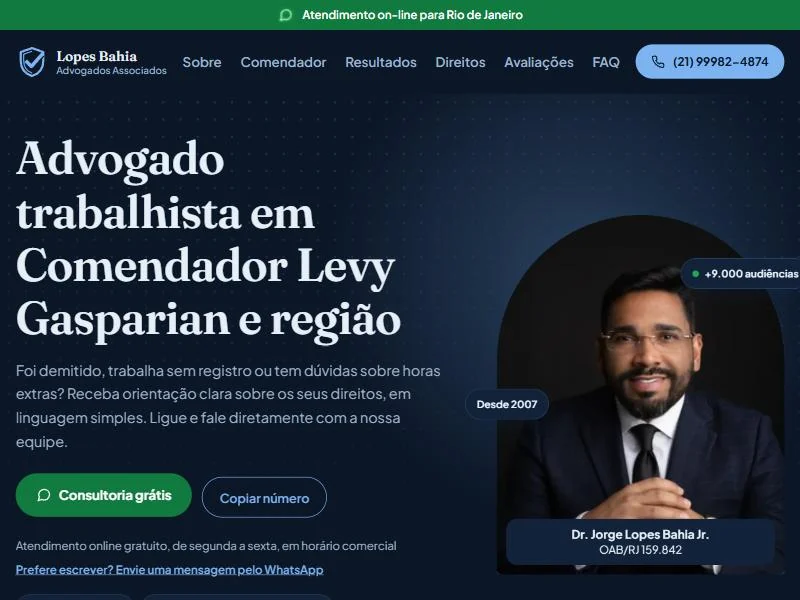
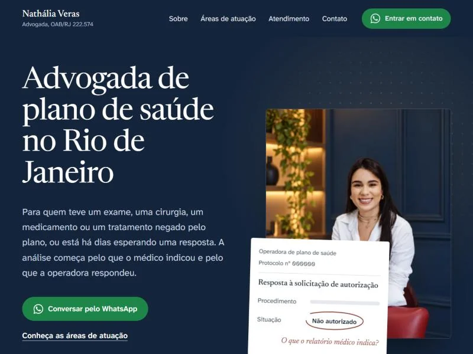
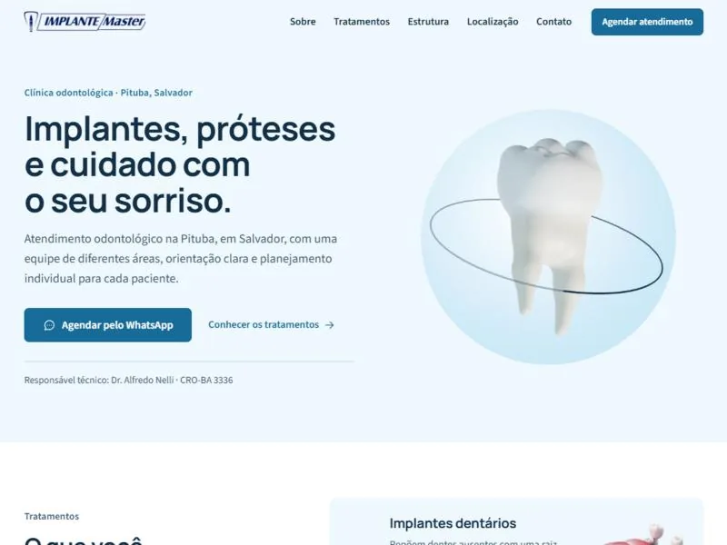
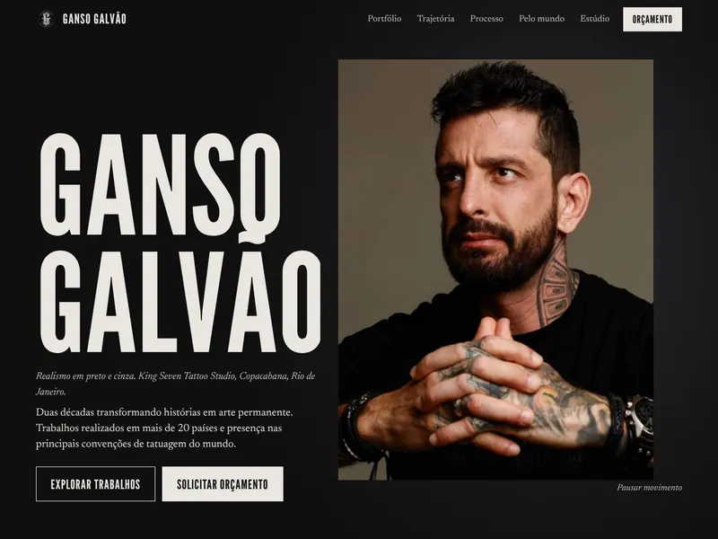
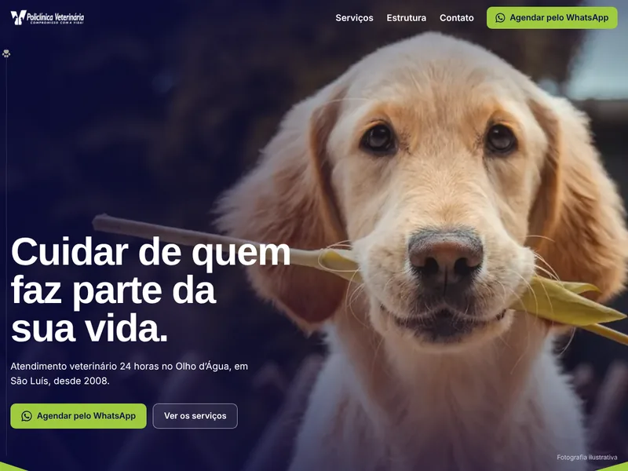
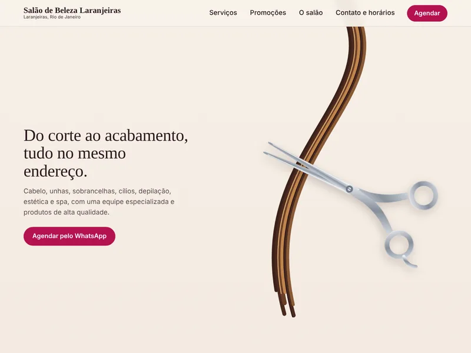

Chegou por indicação
A pessoa recebe seu link de um amigo, abre e já encontra o serviço explicado, fotos do trabalho e o botão de contato.
Paulo Victor, criação de sites
Sites para nail designers, assistências técnicas, escritórios, clínicas, barbearias e espaços para eventos.
Crio sites para pequenos negócios e profissionais que querem apresentar seus serviços com clareza e facilitar o primeiro contato pelo WhatsApp.
01 Por que ter um site
Muitas vezes, um perfil para rolar e uma conversa que começa com “quanto custa?”. Com um site, ela abre um link e, em poucos segundos, entende o que você faz, vê seu trabalho e sabe como falar com você.
A pessoa recebe seu link de um amigo, abre e já encontra o serviço explicado, fotos do trabalho e o botão de contato.
Serviços, região atendida, horários, como funciona. O que você repete em toda conversa fica em um lugar só, pronto para enviar.
Quem chama no WhatsApp já viu o que você oferece. Em vez de pedir informações básicas, chega com uma dúvida sobre o caso dela.
Em números
Percentual dos usuários de internet no Brasil. Toque em cada barra para ver o que isso muda para o seu site.
99%
Acessaram a internet pelo celular
O site precisa abrir rápido e ficar bem na tela do celular. É nela que quase todo mundo vai ver sua página.
Fonte: TIC Domicílios 2025, Cetic.br/NIC.br. Usuários de internet com 10 anos ou mais; atividades nos três meses anteriores à pesquisa, feita de março a setembro de 2025.
O Instagram mostra o dia a dia. As indicações trazem gente nova. O site explica o serviço com calma e leva a pessoa até o seu WhatsApp. Você coloca o link na bio, manda para quem pergunta e deixa as indicações chegarem mais bem informadas.
O que entra na página depende do negócio:
02 Serviços
Não sabe qual escolher? Tudo bem. Me conta o que você faz e a gente decide junto qual faz mais sentido.
Uma página só, focada em um serviço, um espaço ou uma oferta. Indicada quando há um objetivo claro, como receber pedidos de orçamento ou marcar horários. É o que muita gente chama de landing page.
Mais espaço para apresentar o negócio: quem você é, todos os serviços, a equipe e a trajetória. Indicado para quem oferece várias coisas ou quer que o cliente conheça o negócio antes de chamar.
O site abre rápido e fica bem no celular, que é onde a maioria vai ver. Vai ao ar com endereço próprio, e o botão do WhatsApp leva direto para a conversa com você.
03 Projetos
Em cada um, o objetivo da página e uma escolha que ajuda quem visita. Clique para abrir o site.

01Nail designer a domicílio
Apresenta o atendimento de manicure e pedicure em casa, no Rio de Janeiro. Os dias e horários aparecem logo abaixo dos botões de ligar e de WhatsApp, então a cliente já sabe quando pode marcar.
isabelleromanonaildesign.netlify.app
Ver site: Isabelle Romano (abre em nova aba)
02Assistência para celulares
Leva quem está com o celular quebrado a pedir um orçamento antes de decidir. Ao lado do botão de ligar há um “Montar orçamento”, para quem prefere descrever o problema primeiro.
etreaassistencia.netlify.app
Ver site: Etrea (abre em nova aba)
03Advocacia trabalhista
Orienta trabalhadores com dúvidas sobre demissão, registro em carteira ou horas extras. A primeira tela começa pelas perguntas que a pessoa já está se fazendo e mostra o advogado com o número da OAB.
jorgelopesadv.netlify.app
Ver site: Dr. Jorge Lopes (abre em nova aba)
04Advocacia em planos de saúde
Fala com pacientes que tiveram um exame, uma cirurgia ou um tratamento negado pelo plano de saúde. A página explica o que enviar no primeiro contato pelo WhatsApp, então a conversa já começa com o caso em mãos.
nathaliaverasadv.netlify.app
Ver site: Dra. Nathália Veras (abre em nova aba)
05Clínica odontológicaProjeto demonstrativo
Apresenta os tratamentos de uma clínica na Pituba, em Salvador, e leva ao agendamento pelo WhatsApp. Cada tratamento é explicado em linguagem simples, e a equipe aparece com o registro no CRO antes de a pessoa marcar a avaliação.
materialpv.vercel.app/implante-master
Ver projeto: Implante Master, projeto demonstrativo (abre em nova aba)
06Revenda de seminovosProjeto demonstrativo
Mostra os carros de uma revenda na Abolição, no Rio de Janeiro, e leva à conversa pelo WhatsApp. A abertura passa pelos carros do pátio com ano, quilometragem e preço, e o simulador calcula a parcela e já manda a proposta pronta para a loja.
bolonha-conceito.vercel.app
Ver projeto: Bolonha Automóveis, projeto demonstrativo (abre em nova aba)
07TatuadorProjeto demonstrativo
Apresenta o portfólio de um tatuador de realismo em preto e cinza em Copacabana, no Rio de Janeiro. Ao abrir uma tatuagem, o botão de orçamento já manda para o WhatsApp uma mensagem citando aquela peça, e pede a ideia, a região do corpo e o tamanho.
materialpv.vercel.app/ganso-galvao
Ver projeto: Ganso Galvão, projeto demonstrativo (abre em nova aba)
08Clínica veterináriaProjeto demonstrativo
Apresenta uma clínica veterinária com atendimento 24 horas no Olho d’Água, em São Luís. A pessoa escolhe o cuidado que procura, como consulta, vacinação ou exames, e o botão do WhatsApp já abre com a mensagem pronta sobre aquele serviço.
materialpv.vercel.app/policlinica-veterinaria
Ver projeto: Policlínica Veterinária, projeto demonstrativo (abre em nova aba)
09Salão de belezaProjeto demonstrativo
Releitura do site de um salão em Laranjeiras, no Rio de Janeiro, pensada para levar ao agendamento pelo WhatsApp. Ao rolar a página, uma tesoura corta uma mecha e revela os serviços, e cada serviço abre a conversa já com o nome do procedimento.
materialpv.vercel.app/salao-laranjeiras
Ver projeto: Salão de Beleza Laranjeiras, projeto demonstrativo (abre em nova aba)Quer ver como ficaria com o seu negócio?
Conversar sobre meu site04 Como funciona
O que você faz, para quem e o que quer divulgar. Pode ser pelo WhatsApp, do seu jeito. Não precisa entender nada de site.
A partir disso, conversamos sobre o que faz sentido: uma página de divulgação ou um site institucional, e o que entra nele.
Organizo os textos e as fotos, crio o visual e deixo tudo funcionando bem no celular.
Publico com o endereço do seu negócio, faço os ajustes finais e você recebe o link para colocar na bio e mandar para os clientes.
05 Sobre
Crio sites para pequenos negócios e profissionais
Sou formado em Análise e Desenvolvimento de Sistemas e sempre gostei de informática. Hoje uso isso para fazer sites de quem tem um negócio: cuido do texto, do visual e da parte técnica, para a página ficar clara e funcionar bem no celular.
Do primeiro contato à publicação, você fala direto comigo. Sem intermediário e sem precisar entender de tecnologia.
06 Contato
Me conta o que você faz e o que gostaria de mostrar aos seus clientes. Pode ser só uma ideia, a gente conversa a partir dela.